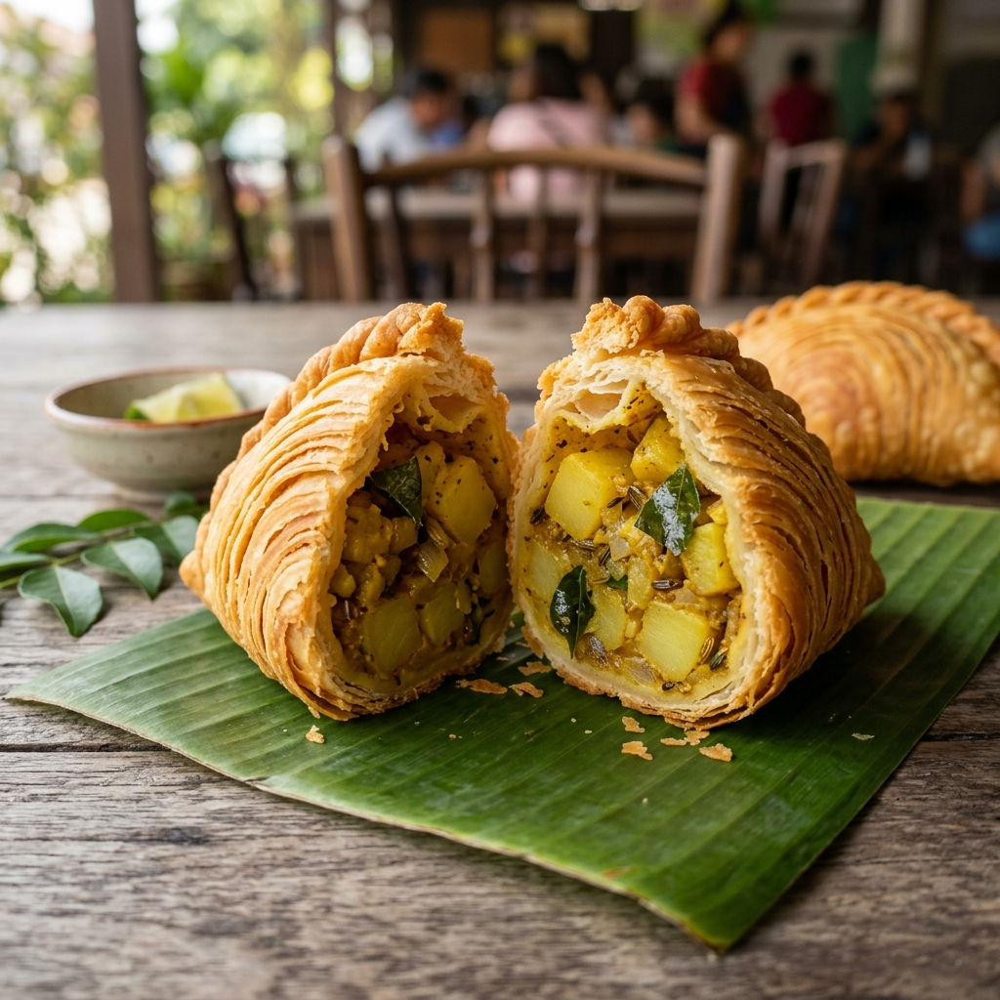
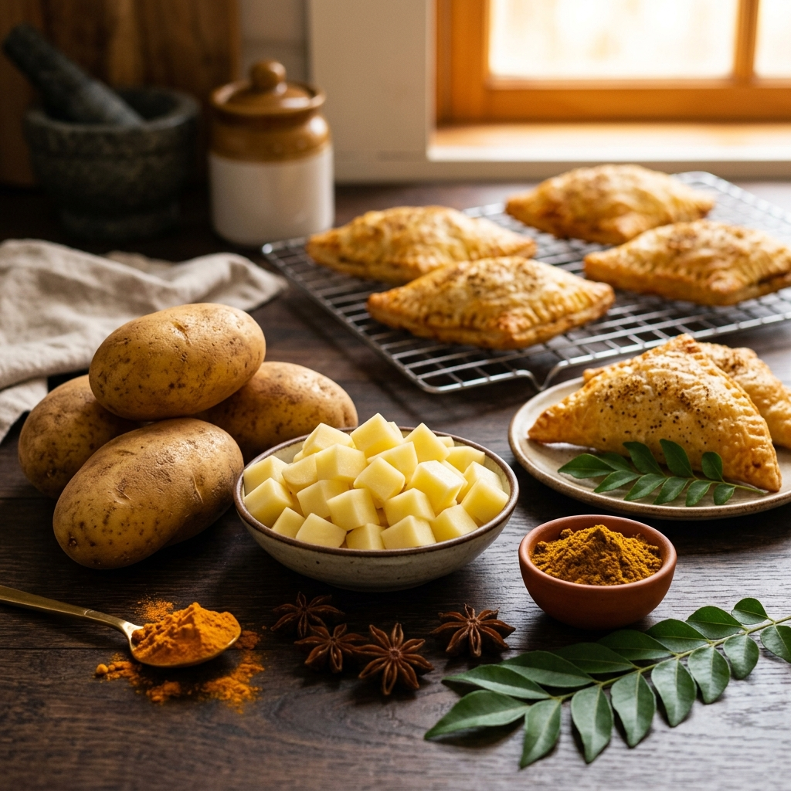

Taste the unmatched goodness of piping hot, hand-folded daily curry puffs! Packed with freshly diced local potatoes, aromatic Thai yellow curry spices, lemongrass, and kaffir lime leaves wrapped in a shatteringly flaky spiral crust. 100% Meat-Free Pure Potato & Thai Spice Delight!

In Balik Pulau, we combine farm-fresh local produce with authentic Thai yellow curry spices and traditional artisan spiral pastry techniques.
We use 100% fresh Russet potatoes sourced directly from farms. Every potato is hand-peeled and diced into uniform 5mm cubes daily so they cook up soft, fluffy, and fragrant inside.
No artificial flavorings or meat fillers. We sauté fresh shallots, garlic, lemongrass, and garden-picked kaffir lime leaves in pure oil, blooming roasted Thai yellow curry powder (*Prik Gaeng Karii*) to rich perfection.
Our signature double-dough rolling technique creates delicate micro-layers of dough and butter that bloom into golden, ultra-crispy spiral rings that stay crunchy for up to 8 hours!
We never sell frozen or pre-fried puffs! Every batch is hand-crimped and deep-fried fresh in small batches at precisely 170°C so you get them piping hot, light, and grease-free.

Loved by locals and travelers visiting Balik Pulau!
"Hands down the BEST curry puff in Balik Pulau! The potato filling is so fresh, fluffy, and full of aromatic curry leaf flavor. The spiral crust is super flaky and not oily at all!"
"I drove all the way to Taman Nyaman Indah just for Nat's potato curry puffs! You can taste how fresh the potatoes are, and knowing it's 100% meat-free pure potato makes it even better!"
"Bought a box for our family afternoon tea. Even after 4 hours, the karipap pusing was STILL crispy! Piping hot, flavorful, and incredibly delicious."
Drop by our traditional kitchen in Balik Pulau for hot, fresh curry puffs straight out of the wok!
No 8, Lebuh Sri Genting 8, Taman Nyaman Indah, 11000 Balik Pulau, Penang, Malaysia
🗺️ Open in Google Maps Directions ➔Phone / WhatsApp: 0164852953
💬 Chat on WhatsApp ➔